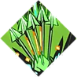

Aphrodite

brief desc of Artemis
brief desc of Artemis
| Boon | Description |
|---|---|
|
Deadly Strike |
Attack deals more damage and has a 15% chance to do Critial damage. |
|
Deadly Flourish |
Special does more damage and has a 20% chance to do Critical damage. |
|
True Shot |
Cast becomes a homing projectile and has a 10% chance to do Critical damage. |
|
Hunter's Flare |
Cast hurts enemies around Zagreus and has a 10% chance to do Critical damage. |
|
Hunter Dash |
Dash-Strike does more damage. |
|
Artemis' Aid 
|
Call shoots a homing arrow that has a 35% to do Critical damage. |
|
Pressure Points |
All damage dealt has a chance to be Critical damage. |
|
Exit Wounds |
Enemies take damge when a Cast in them ejects out. |
|
Hide Breaker 
|
Endure some attacks from close enemies. |
|
Clean Kill |
Critical does more damage. |
|
Hunter Instinct 
|
Critical damage charges up the God Gauge quicker. |
|
Hunter's Mark 
|
Doing Critical damage can leave an enemy near it Marked. |
|
Support Fire |
Following a Cast, or hittin with an Attack or Special, shoot a homing arrow. |
|
Fully Loaded  |
Gain another Cast ammo. |
|
Heart Rend 
|
Critical effects do more damage to Weak enemies. |
|
Hunting Blades 
|
Cast summons a quicker Blade Rift and homes to the closest enemy. |
|
Deadly Reversal 
|
After deflecting an attack, gain a 20% chance to do critical damage. |
|
Crystal Clarity |
Cast does more damage and tracks enemies efficiently. |
|
Splitting Headache |
Enemies with Hangover are more likely to recieve Critical damage. |
|
Mirage Shot 
|
Cast now fires a second projectile, however its damage is reduced. |
|
Lightning Rod 
|
A collectible Cast now strikes neaby enemies with lightning bolts every second. |
Artemis' boons give Zagreus abilities an increase in doing Critical damage.
Critical damage is an effect that can do more damage than usual. Critical damage can sometimes make an enemy Marked which increases the chance of an enemy getting hit by a critical hit.